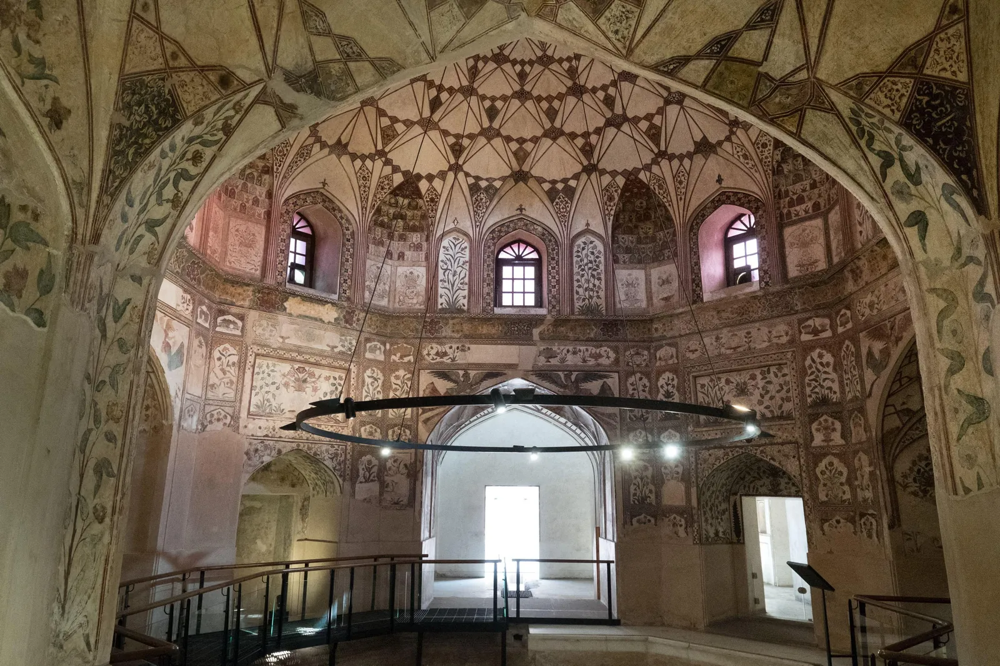

Wazir Khan Mosque and Shahi Hammam offer a closer look at Lahore’s Mughal-era urban heritage. The mosque is celebrated for colourful tilework and decorative detail, while the restored hammam helps explain the public facilities and social life of the historic city. Visiting both on foot can reveal how monuments sit within the living streets of the Walled City.
Wazir Khan Mosque: look closely
The mosque is known for its richly decorated surfaces, calligraphy, tilework and frescoes. Take time to observe the entrance and courtyard details rather than treating the visit as a quick photo stop. Respect prayer times and any areas that are closed to visitors.
Shahi Hammam: understanding the bathhouse
The Shahi Hammam, near Delhi Gate, was a Mughal-era public bathhouse. Its rooms, surviving decorative work and restored spaces offer insight into how people used civic facilities in the historic city. Follow the visitor route and any photography or conservation rules.
Explore the streets between landmarks
The lanes and bazaars around these sites are part of the experience. Streets can be busy and narrow, with pedestrians, motorbikes and delivery traffic. Walk attentively, stay with your group and ask before photographing people or shops.
A suggested walking plan
Start near Delhi Gate and visit Shahi Hammam, then continue toward Wazir Khan Mosque and nearby heritage lanes, allowing time for breaks and local exploration. Route access can vary due to crowds, events or restoration work, so check locally and avoid rushing.
Dress and respectful behaviour
Dress modestly for the mosque, remove shoes where required and follow the guidance of mosque staff. Keep voices low in prayer areas and avoid blocking worshippers. At both sites, do not touch fragile decorative surfaces or cross barriers.
Best time to visit
Morning can be more comfortable for walking, but access may be affected by prayer times, opening schedules, restoration work or local events. Confirm current access and entry arrangements before travelling.
Food and nearby experiences
The surrounding Walled City has traditional food, small shops and other heritage stops. Choose a reputable food vendor, carry water and leave enough time to enjoy the area without turning the walk into a rushed checklist.
Practical visitor tips
Wear comfortable shoes, keep valuables secure in crowded lanes and carry cash for small purchases. A local heritage guide can add context to architectural details and help navigate the lanes respectfully. Leave litter behind nowhere and support conservation-minded local businesses.
Plan your Pakistan trip
Travel conditions, opening times and access can change. Confirm current details before departure and allow flexibility for weather or road delays. Past Enlighten can help you discuss routes and trip timing.
Ask Past Enlighten